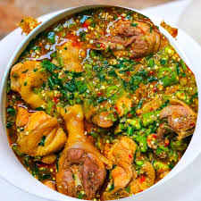
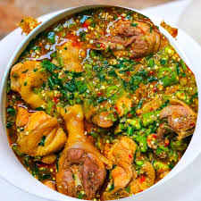

On today's episode;
Egusi soup is a Nigerian delicacy,though it is eaten by West Africans, from the Igbo tribe in Nigeria, all the way to Ghana where it is called Agushie.
Egusi is West African name for the seeds of plants like squash, melons, and gourds, that when dried and ground become a staple ingredientin many West African dishes. in Nigeria, egusi is popular with pounded yam. this dish is rich in fat and protein and other essential vitamins.

| Ingredients | Measurement |
|---|---|
| Fresh blended Onion | 1 cup |
| Grinded Egusi | 4 cups |
| Palm oil | 1/2 cup |
| Locust beans | 2 teaspoons |
| Grinded crayfish | 3 tablespoons |
| Assorted meat and fish | Personal preference |
| Cut pumpkin leaf | 2 cups |
| Salt | To taste |
| Seasoning Cubes | 2 cubes |
| Black pepper | 2 teaspoons |
Other Sumptous delicacies can be seen below:


 
